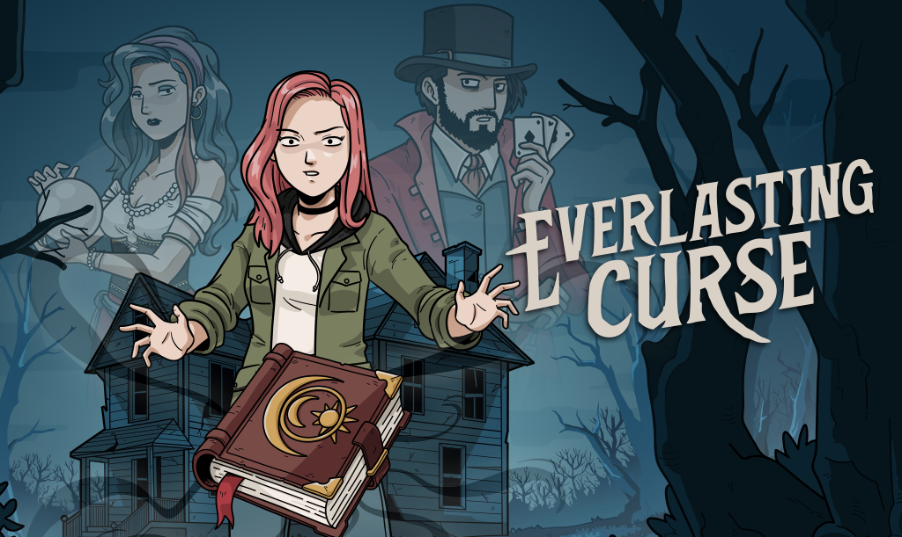

Mistério, enigmas e suspense em um dos jogos que eu mais gosto.

A Dark Dome é um estúdio independente de jogos eletrônicos com sede no Peru. Foi fundada em 2019 por Aldo Mujica e Sandro de la Riva Aguero. Nos jogos de fuga, encontramos uma maneira de realizar nosso antigo desejo de criar histórias. Sempre amamos a ideia de criar jogos eletrônicos e dirigir filmes. Nossos jogos são o canal pelo qual damos forma a tudo o que temos em mente. Nosso universo se desenrola em Hidden City, um lugar remoto onde eventos incomuns acontecem. Criamos este mundo e decidimos preenchê-lo com mistério e suspense para cativar o jogador. A cada jogo, novas histórias de seus habitantes são reveladas, assim como os enigmas e segredos que assombram a cidade. Mergulhe em nossas histórias surreais e descubra o mistério de Hidden City.
Aqui um resumido do meu jogo favorita da saga de darkdome
Haunted Laia
Haunted Laia é meu jogo favorito da Dark Dome porque possui uma história muito interessante e diferente. No jogo existem cinco universos conectados, onde precisamos encontrar pistas entre eles para ajudar Laia a escapar. Eu gosto muito da diversidade dos cenários, dos enigmas variados e da forma como cada universo possui detalhes únicos, deixando a aventura mais divertida e misteriosa.
- Laia Assombrada
- Uma nova família chegou à Cidade Oculta, mas desde o dia em que se mudaram, têm sofrido assédio por parte de presenças estranhas em sua própria casa, até que, após alguns dias, desapareceram sem deixar rastro.
Site oficial
Clique no link abaixo para acessar o site oficial do jogo.
Acessar site oficial